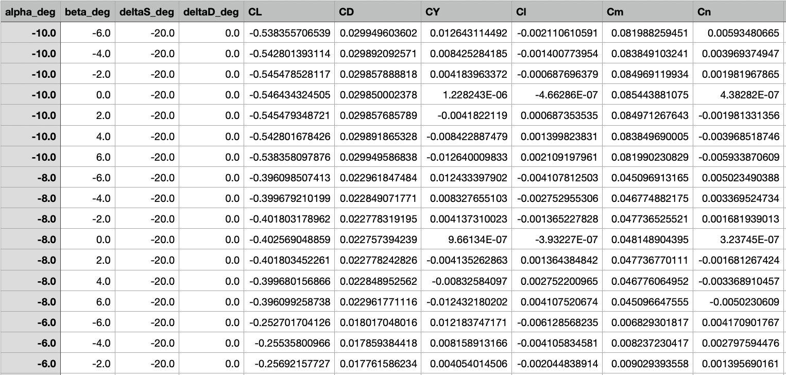

Aerodynamic Data Processing
Creating, training, and evaluating machine learning models for our use case.
With a data-set of around 4000 vectors we have multiple different approaches of creating a model that accounts for parameters that are on non principal axes. This project will require the use of multiple different machine learning models. The process will follow these 6 steps.
- Load the data from the master sheets.
- Scramble the ordered data from the mastersheet into a new shuffled csv file.
- Normalize the data.
- Organize and fit our data into input sequences and output values.
- Build train and evaluate the three model.
- Compare the models and choose the best performer.
1. Loading and evaluating the raw data.
We have two different sheets of data, "aero_master.csv" and "sweep_body_rates.csv".
aero_master.csv

- This data contains all of our in-plane principal axis data. What this means is that while α and β are altered independent of each other (they can both have non-zero values and can act off of their principal axes), ΔS and ΔD are not altered independent of each other (one value must be zero as the other is altered). The reason that it is this way is that when simulating our blended-body aircraft through four control parameters with 21 different configurations, we would require 214 runs to fully populate the aero parameter table. This would require around 200k different runs, which is not a reasonable amount of datapoints to simulate.
aero_nonposed_cleaned.csv
- This data contains a few combinations of states where ΔS and ΔD are deflected simultaneously. However it was only done for a select few configurations only yielding around 2000 distinct cases as compared to the 200,000 cases need to fully populate all points in the vector spaces.
This data will be exclusivley used to test on to determine how well our model is at predicting the points which would otherwise be left empty in the simulation table. It will be cut in with the test portion of the master sheet data at a ration of 2/3 aero_nonposed_cleaned.csv 1/3 of the aero_master.csv data.
Our data is formatted as follows:
Inputs
- α -> Vertical Attitude
- β -> Horizontal Attitude
- ΔS -> Elevon Combined Angle
- ΔD -> Elevon Angle Differential
Outputs
- CD -> Drag Coeff.
- CL -> Lift Coeff.
- CY -> Side Force Coeff.
- Cl -> Roll Coeff.
- Cn -> Yaw Coeff.
- Cm -> Moment Coeff.

We then load the data with the Pandas package and continue.
2. Scrambling the loaded data
The raw data from the master sheet is organized in the angle of attack sweeps due to how data formatting is done in VSPAero. This means that if we were to split this csv using the sequential sorting of training, validation, and test data we would be missing entire sweeps for the training data. This is a reality for both the master sheet and nonposed sheet.
To acheive this we create a simple sorting function that takes in a dataset and the float values of what percent of the dataset will be split into training data, validation data, and test data. Since we are only using the nonposed data for testing we avoid splitting that dataframe. The function works by taking it its arguments and dataset, then sequencially copying and slicing the fraction ratio of the original dataset, then continuing off where the last slice occured and slicing off the next data set. Thus slices training first, then validation, and the remaning is reserved for test data.